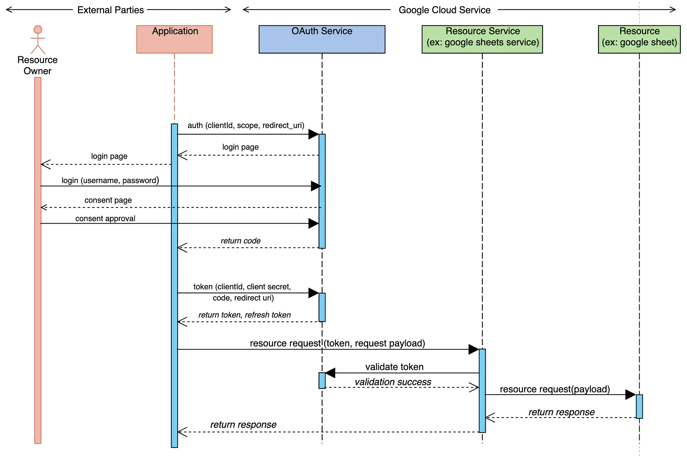
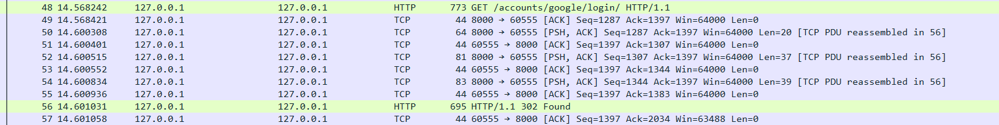
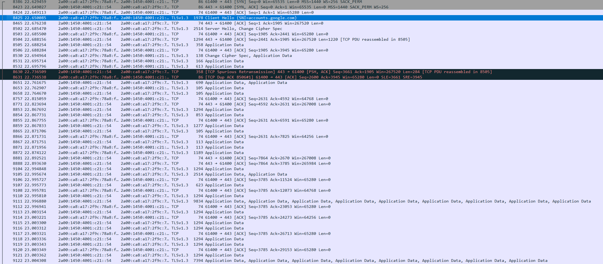
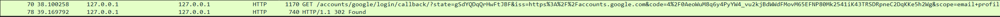
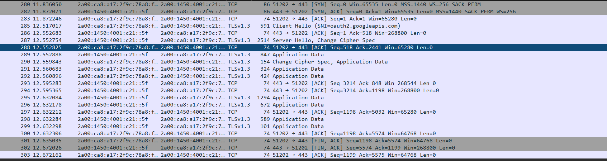

Demonstrační webová aplikace — Turnajový systém
s autentizací přes Google API
OAuth 2.0 je otevřený autorizační protokol (RFC 6749), který umožňuje aplikacím získat omezený přístup k uživatelskému účtu na jiné službě — bez sdílení hesla. Uživatel schvaluje přístup přímo na straně poskytovatele (Google, GitHub…).
Aplikace nikdy nevidí heslo uživatele. Přístupové tokeny mají omezenou platnost a scope.
Jeden klik — žádná registrace, žádné zapomenuté heslo. Uživatel používá svůj Google účet.
Podporuje ho Google, Facebook, GitHub, Microsoft a další. Používá ho většina moderních webů.
Aplikace může dostat přístup k emailu, profilu, kalendáři — jen to, co uživatel schválí.
Veřejný identifikátor aplikace. Google podle něj pozná, která aplikace žádá o přístup.
Tajný klíč aplikace — nikdy neopustí server. Slouží k prokázání identity při výměně kódu za token.
Rozsah oprávnění, o která aplikace žádá — např. email, profile nebo přístup ke Google Sheets.
Adresa, na kterou Google přesměruje uživatele po přihlášení. Musí být předem zaregistrovaná v Google Cloud Console.
Jednorázový kód vydaný po souhlasu uživatele. Platí jen krátce a jen pro jedno použití.
Krátkodobý přístupový klíč k datům (minuty až hodiny). Aplikace ho přikládá ke každému API požadavku.
Dlouhodobý token pro obnovení access_tokenu bez nutnosti znovu přihlašovat uživatele.
Stránka zobrazená uživateli: „Tato aplikace chce přistupovat k…" Uživatel explicitně schvaluje rozsah přístupu.
clientId, scope, redirect_uri.client_secret zpět na OAuth Service — prokáže svou identitu.
Tradiční Django autentizace pracuje s uživatelským jménem a heslem uloženým v databázi:
# Klasická Django autentizace
from django.contrib.auth import authenticate
user = authenticate(
request,
username="uzivatel",
password="heslo123"
)
if user is not None:
login(request, user)Hesla jsou hashována (PBKDF2), ale aplikace musí sama řešit registraci, reset hesla, ověření emailu, brute-force ochranu…
Správa hesel, reset, 2FA, phishing, nutnost ukládat citlivá data v DB
Žádná hesla v DB, Google řeší 2FA a bezpečnost, jednodušší UX, méně kódu k udržení
Dva typy uživatelů, oba přihlášeni přes Google OAuth2:
Po přihlášení přes Google → výběr role (/role-select/) → přesměrování na příslušný dashboard
models.py (zkráceno)
class Player(models.Model):
user = models.OneToOneField(
settings.AUTH_USER_MODEL,
related_name='player_profile'
)
fname = models.CharField(max_length=50)
lname = models.CharField(max_length=50)
class Team(models.Model):
name = models.CharField(max_length=20)
tag = models.CharField(max_length=3)
players = models.ManyToManyField(Player)requirements.txt
Django>=5.2
django-allauth[google]
PyJWT
python-dotenvINSTALLED_APPS
'django.contrib.sites',
'allauth',
'allauth.account',
'allauth.socialaccount',
'allauth.socialaccount.providers.google',settings.py — OAuth konfigurace z .env
SOCIALACCOUNT_PROVIDERS = {
'google': {
'SCOPE': ['profile', 'email'],
'APP': {
'client_id': os.environ.get(
'GOOGLE_CLIENT_ID'),
'secret': os.environ.get(
'GOOGLE_CLIENT_SECRET'),
}
}
}
SOCIALACCOUNT_AUTO_SIGNUP = True
SOCIALACCOUNT_LOGIN_ON_GET = True
ACCOUNT_LOGOUT_ON_GET = True
SOCIALACCOUNT_EMAIL_AUTHENTICATION_AUTO_CONNECT = Truehttp://127.0.0.1:8000/accounts/google/login/callback/.envSoubor .env (nezveřejňovat, v .gitignore)
DJANGO_SECRET_KEY=...
# Google OAuth2 credentials
GOOGLE_CLIENT_ID=520054...googleusercontent.com
GOOGLE_CLIENT_SECRET=GOCSPX-...Soubor .env je v .gitignore — credentials se nikdy nekomitují do repozitáře.
Vlastní dekorátory v decorators.py chrání views před neoprávněným přístupem:
def player_required(view_func):
@wraps(view_func)
def wrapper(request, *args, **kwargs):
if not request.user.is_authenticated:
return redirect('account_login')
if hasattr(request.user,
'founder_profile'):
return redirect('founder_dashboard')
if not hasattr(request.user,
'player_profile'):
return redirect('role_select')
return view_func(request, *args, **kwargs)
return wrapperPoužití v views.py:
@player_required
def player_dashboard(request):
...
@founder_required
def founder_dashboard(request):
...Nepřihlášený → login
Hráč na founder URL → přesměrování
Bez role → výběr role

GET /accounts/google/login/ HTTP/1.1 na lokální Django server
(127.0.0.1:8000). Django odpovídá 302 Found a přesměrovává prohlížeč
na Google OAuth server — URL obsahuje parametry client_id, scope
a redirect_uri.
| # | Protokol | Popis |
|---|---|---|
| 48 | HTTP | GET /accounts/google/login/ HTTP/1.1Prohlížeč žádá Django o zahájení OAuth flow |
| 49–55 | TCP | ACK / PSH, ACKPřenos HTTP odpovědi po fragmentech (reassembled in #56) |
| 56 | HTTP | 302 FoundDjango přesměrovává prohlížeč na accounts.google.com s parametry client_id, scope, redirect_uri |
| 57 | TCP | ACKProhlížeč potvrdil přijetí odpovědi — spojení ukončeno |
accounts.google.com
443, poté TLS 1.3
Client Hello se SNI = accounts.google.com. Google odpovídá
Server Hello + Change Cipher Spec. Následující
Application Data obsahují šifrovanou consent page — stránku, kde uživatel
schvaluje přístup k profilu a e-mailu.
| # | Protokol | Popis |
|---|---|---|
| 8386 | TCP | SYNProhlížeč iniciuje TCP spojení na port 443 (HTTPS) |
| 8423 | TCP | SYN-ACKGoogle přijímá spojení a potvrzuje |
| 8424 | TCP | ACKDokončení three-way handshake — spojení navázáno |
| 8425 | TLSv1.3 | Client Hello (SNI=accounts.google.com)Prohlížeč zahajuje TLS — SNI říká serveru, pro kterou doménu žádá certifikát |
| 8466 | TLSv1.3 | Server Hello, Change Cipher SpecGoogle odpovídá certifikátem a dohodnutými šifrovacími parametry |
| 8505+ | TLSv1.3 | Application DataŠifrovaná consent page — HTML/JS Google přihlašovací stránky |
| 8630–8631 | TCP | Spurious Retransmission / Dup ACKSíťový artefakt (paket doručen dvakrát) — bez dopadu na OAuth flow |

code a parametrem
state v URL. Django zachytí tento požadavek, ověří state proti
CSRF tokenu a následně vymění code za přístupové tokeny voláním Google API
na straně serveru. Django odpovídá 302 Found a přesměrovává uživatele na dashboard.
| # | Protokol | Popis |
|---|---|---|
| 70 | HTTP | GET /accounts/google/login/callback/?state=…&code=4%2F0Aeo…Google vrátil jednorázový authorization code — platný jen pro jedno použití |
| 78 | HTTP | 302 FoundDjango ověřil state, vyměnil code za tokeny (server-side) a přesměrovává na dashboard |
oauth2.googleapis.com
443, TLS 1.3 Client Hello se SNI =
oauth2.googleapis.com. Po výměně šifrovacích parametrů proběhne šifrovaná
Application Data — backend posílá code + client_secret
a přijímá access_token + id_token. Spojení je ukončeno
FIN/ACK sekvencí.
| # | Protokol | Popis |
|---|---|---|
| 280 | TCP | SYNDjango backend iniciuje TCP spojení na oauth2.googleapis.com:443 |
| 282 | TCP | SYN-ACKGoogle přijímá spojení |
| 283 | TCP | ACKThree-way handshake dokončen |
| 285 | TLSv1.3 | Client Hello (SNI=oauth2.googleapis.com)Django zahajuje TLS — bez prohlížeče, čistě server-to-server komunikace |
| 287 | TLSv1.3 | Server Hello, Change Cipher SpecGoogle odpovídá, šifrovací parametry dohodnuty |
| 289–299 | TLSv1.3 | Application DataŠifrovaný POST /token — Django odesílá code + client_secret, Google vrací access_token + id_token |
| 301–303 | TCP | FIN/ACK → FIN/ACK → ACKŘádné ukončení TCP spojení oběma stranami |
Projekt demonstruje kompletní OAuth2 flow s Google API v Django aplikaci. Turnajový systém umožňuje správu hráčů, týmů, turnajů a zápasů, přičemž veškerá autentizace probíhá přes Google.
Jednoduchá integrace, bezpečné uložení credentials, automatická správa tokenů
Závislost na Google API, nutnost Google Cloud Console, callbacks pouze přes HTTPS v produkci